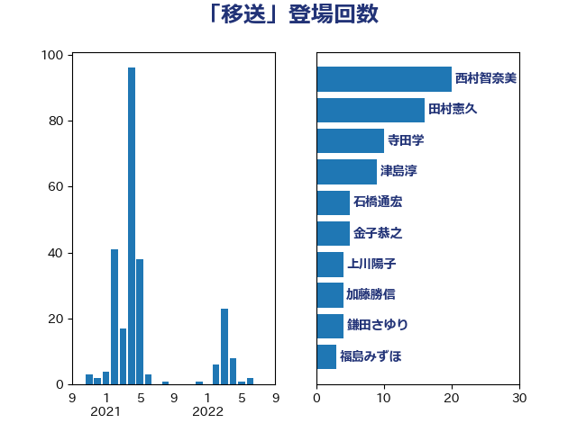

単語「移送」

| 西村智奈美 | 立憲民主党 | 20 回 |
| 田村憲久 | 自由民主党 | 16 回 |
| 寺田学 | 立憲民主党 | 10 回 |
| 津島淳 | 自由民主党 | 9 回 |
| 石橋通宏 | 立憲民主党 | 5 回 |
| 金子恭之 | 自由民主党 | 5 回 |
| 上川陽子 | 自由民主党 | 4 回 |
| 加藤勝信 | 自由民主党 | 4 回 |
| 鎌田さゆり | 立憲民主党 | 4 回 |
| 福島みずほ | 社会民主党 | 3 回 |
| 吉良州司 | 無所属 | 2 回 |
| 城井崇 | 立憲民主党 | 2 回 |
| 山本博司 | 公明党 | 2 回 |
| 林芳正 | 自由民主党 | 2 回 |
| 武井俊輔 | 自由民主党 | 2 回 |
| 磯崎仁彦 | 自由民主党 | 2 回 |
| 秋野公造 | 公明党 | 2 回 |
| 菅家一郎 | 自由民主党 | 2 回 |
| 近藤昭一 | 立憲民主党 | 2 回 |
| 高良鉄美 | 無所属 | 2 回 |
| 高階恵美子 | 自由民主党 | 2 回 |
| こやり隆史 | 自由民主党 | 1 回 |
| 中島克仁 | 立憲民主党 | 1 回 |
| 伊藤孝江 | 公明党 | 1 回 |
| 古川禎久 | 自由民主党 | 1 回 |
| 吉田宣弘 | 公明党 | 1 回 |
| 平沢勝栄 | 自由民主党 | 1 回 |
| 有村治子 | 自由民主党 | 1 回 |
| 梶山弘志 | 自由民主党 | 1 回 |
| 江島潔 | 自由民主党 | 1 回 |
| 清水貴之 | 日本維新の会 | 1 回 |
| 田村まみ | 国民民主党 | 1 回 |
| 田村智子 | 日本共産党 | 1 回 |
| 福岡資麿 | 自由民主党 | 1 回 |
| 竹内真二 | 公明党 | 1 回 |
| 菅義偉 | 自由民主党 | 1 回 |
| 蓮舫 | 立憲民主党 | 1 回 |
| 西村康稔 | 自由民主党 | 1 回 |
| 谷川とむ | 自由民主党 | 1 回 |
| 赤嶺政賢 | 日本共産党 | 1 回 |
| 野上浩太郎 | 自由民主党 | 1 回 |
| 青山大人 | 立憲民主党 | 1 回 |
| 青木愛 | 立憲民主党 | 1 回 |
| 馬場伸幸 | 日本維新の会 | 1 回 |